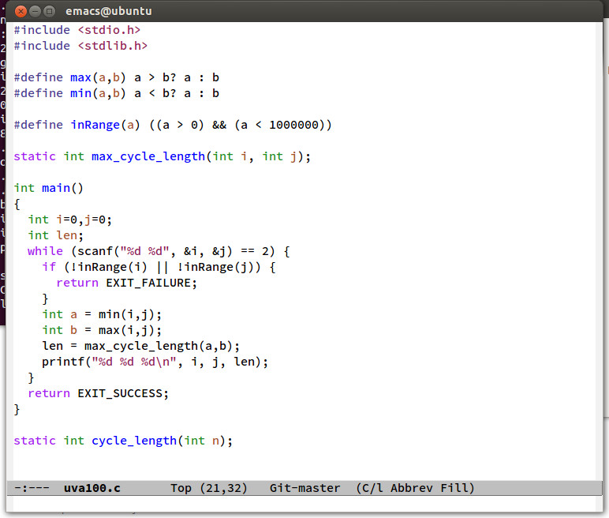

Souce Code Pro Adobe Fonte para emacs
O processo de desenvolvimento de software exige que o programador permaneça longo período em frente a tela do computador criando e editando código fonte. Com o tempo esse período em frente a tela começa a causar desconforto visual. Para amenizar o desconforto, eh comum os desenvolvedor customizarem fonte e esquema de cor no ambiente de produção. Este post descreve como customizar o emacs 23 e 24 para utilizar as fontes Source Code Pro.

As fontes Source Code Pro foram desenvolvidas especificamente para ser usada em ambientes de desenvolvimento. Recentemente, a fabricante Adobe, gentilmente, liberou como open source o código fonte.
Uma abordagem completa sobre família de fontes pode ser encontrada em Source Code Pro.
Instalando as fontes TTF no Linux
Para instalar as fontes eh necessário baixar os binários disponível em Source Code Pro e descompactar em um diretório temporário. Em seguida copie o arquivos .ttf para o para o diretório $HOME/.fonts e execute o comando shell
fc-cache -fv
Agora as fontes jah estão instaladas, para verificar faça
fc-list | grep -i source
A instalação das fontes TTF para todos os usuários do sistema exige permissão de acesso de root. O processo de instalação pode ser encontrado em Installing TrueType fonts under ubuntu.
Configuração do emacs
Com as fontes disponíveis no sistema, basta configurar o emacs para usar a nova família de fontes. Para tanto, edite o arquivo de configuração $HOME/.emacs e insira a instrução elisp
(set-face-attribute 'default nil :family "Source Code Pro" :weight 'normal :width 'ultra-condensed :height 112)
Esta configuração foi extraída do site http://emacswiki.org/emacs/SetFonts. Os parâmetros foram determinados por tentativa e erro. Veja minha configuração pessoal em .emacs